Ulysses Sloan was born on the farm on 2 May 1876, the fifth of six children and one of only two to grow up. Everybody called him Uly. He took over the place when his father tired of town life and came home to retire, and for the next sixty years he farmed it, logged it, and ran a sawmill on it — powered, in the early days, by a steam engine — keeping the accounts in ledger books, one of which turned into the Christmas Book.
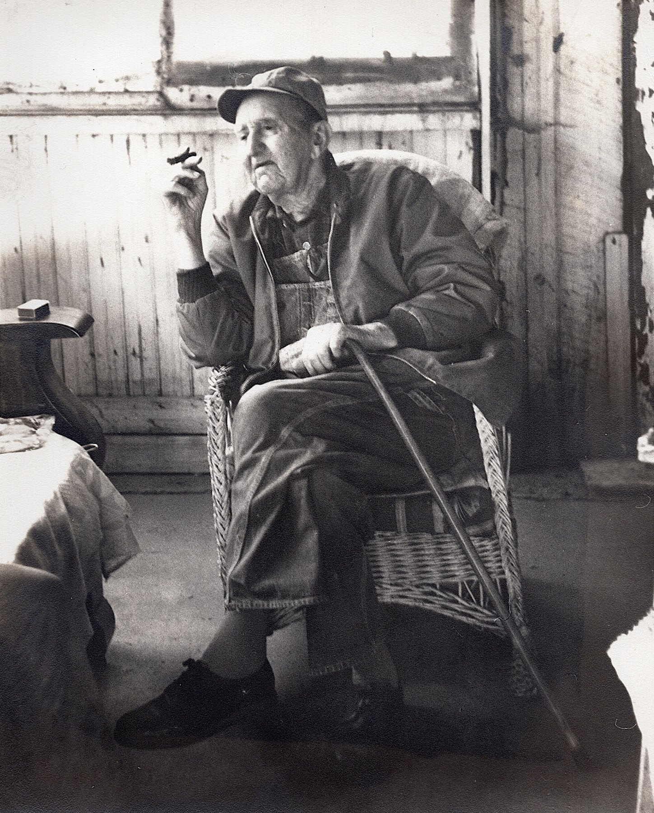
On 20 November 1901, at Rossville, he married Minnie Ruth Simmons (1881–1958), born at Edna Mills. “We have been told they will reside with Mr. Sloan’s father this winter,” the paper said; they never left. Jill Walters still has the mantel clock they were given as a wedding present, and the carpenter’s tool chest of Minnie’s father, John J. Simmons. Minnie’s people were German Baptist Brethren — “Dunkers” — from the big connected families of Nehers, Cripes, Blickenstaffs and Ulerys who had settled Clinton and Carroll counties from 1829 on — John C. Cripe was at Rossville that year, and Joseph Blickenstaff is counted among its pioneers by 1835. Her great-grandfather Peter Cripe was bonded as constable of Ross Township in 1830 and again in 1834, took out a government land patent that year, a year before John Sloan did, and in July 1841 was murdered by a man named William Connor. She stayed Brethren all her life — a member of the Flora Church of the Brethren when she died — and took her granddaughter Ruth to church with her until the girl was ten. Her sister Izora — “Aunt Zora” Julius — and Zora’s husband Dana had the family to Christmas dinner year after year. (Dana Julius, born at Rossville in 1887, died at Vandalia, Illinois in November 1937 and was brought home to Mulberry; their daughter Vivian had been born at Cambria in 1916. Zora lived on until 1969.)
Uly and Minnie had two sons: Ellis L., born 26 August 1902 and named for the little brother Uly had lost, and John E., born 20 May 1910. Uly built the house the grandchildren remembered — the big white one.
The Lafayette paper caught glimpses of him over the years. April 1920: “Sloan & Haggard, of Rossville, have moved their sawmill to the farm of M. L. Fitzgerald to saw the timber for his barn.” November 1927: “Uly D. Sloan, well known Madison township farmer, shot a red fox while it was asleep in a pile of clover chaff. The pelt brought $9.75. Foxes are seldom seen in this part of the state.” (The Christmas Book has it too: “Killed a fox Nov. 25 1927 $8.50” — the paper was more generous.) January 1928: Uly and Irvin Neher “felled the biggest walnut tree in Clinton county” on the Henry Metzger farm southwest of Rossville, grubbing it out by the roots to get its whole value — about a thousand feet of lumber. “The lumber will be shipped to England.” And on Memorial Day 1928 somebody stole his Ford touring car off South Street in Lafayette. “He did not know the license number.” (Between times, in September 1918, at forty-two, he had registered for the draft at Frankfort.)
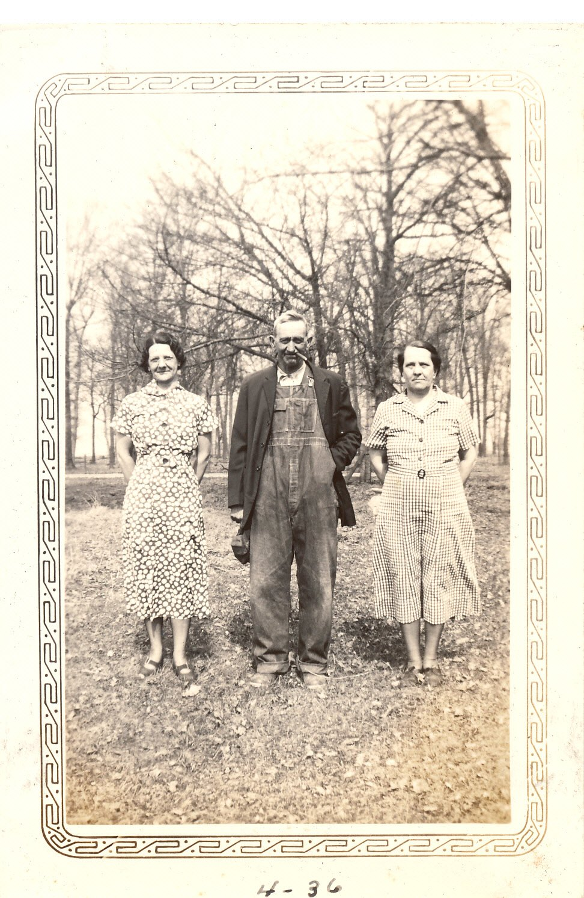
In November 1951 Uly and Minnie held an open house for their golden wedding. “Mr. Sloan has lived on the same farm all of his life,” the announcement said.
I remember going out there as a kid — a big white farm house with Grandma Sloan’s garden south of the house, grapevines on the path to the outhouse, and irises along the fence between the house and the drive. I spent most of my time out there climbing in the sawdust pile at the sawmill and prowling in the woods behind the barn.
Jill Sloan Walters, 2017
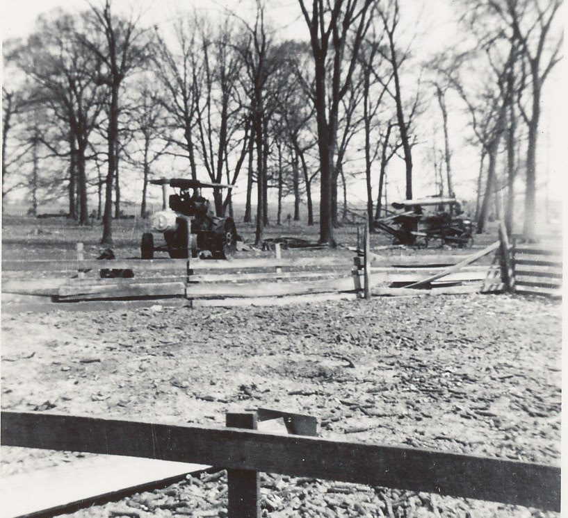
SteamThreshermen
The Sloan men loved steam engines. When the old traction engines went out of use on farms, they followed them to the shows.
Dad and Grandpa Uly, Ellis and Harold went to the Thresherman Reunions at Pontiac, Illinois every year. … As a descendant of Uly, you really need to attend one somewhere to see what it was all about, if you haven’t already.
Jill Sloan Walters, 2017
In August 1961 Ellis and Walter Jacoby (that’s him with Uly and Harold in the 1955 picture) were among the officers of the Clinton County Hobby Club’s steam show at Shady Acres Ranch, east of Mulberry: Baker, Russell, Keck and Case engines, a ground-hog thresher, sawmills, the Beard Concert Band, and thresher meals served by the Mulberry church women. “Parade of All Steam Engines Both Days. NO STUNTS. ONLY THE WORK THESE ENGINES WERE BUILT FOR. … Where Else for 50c Can You See a Show Like This?” John E. kept going to threshing shows all over Indiana into his old age. The pictures below came out of John’s wife Mary’s albums.
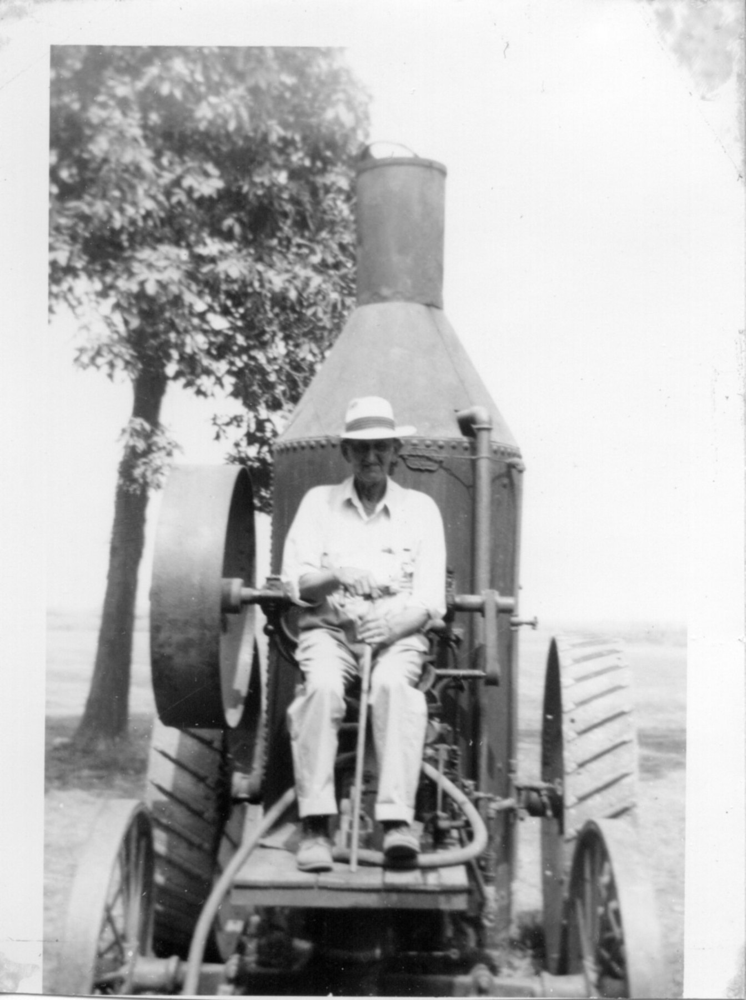
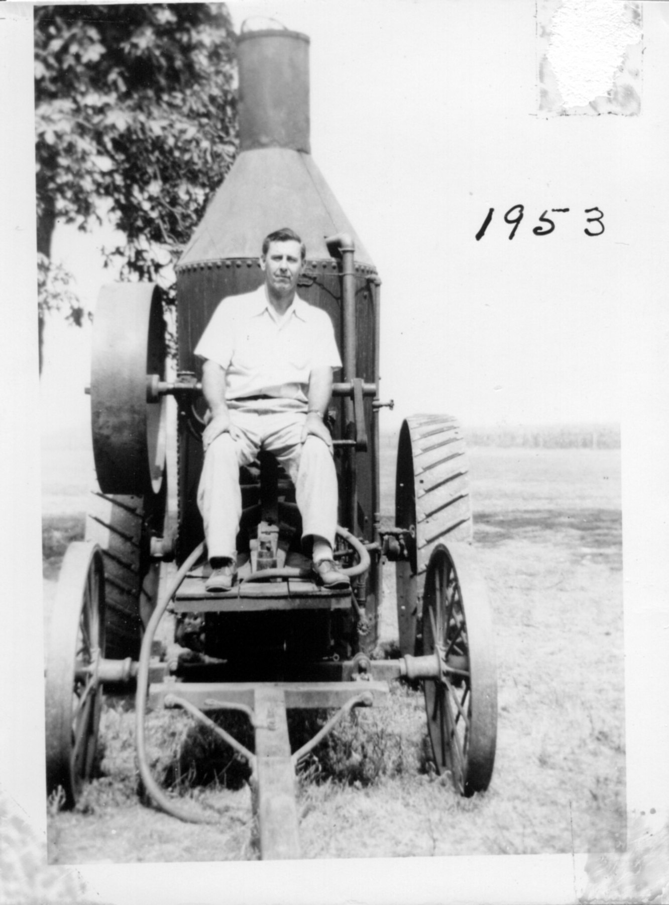
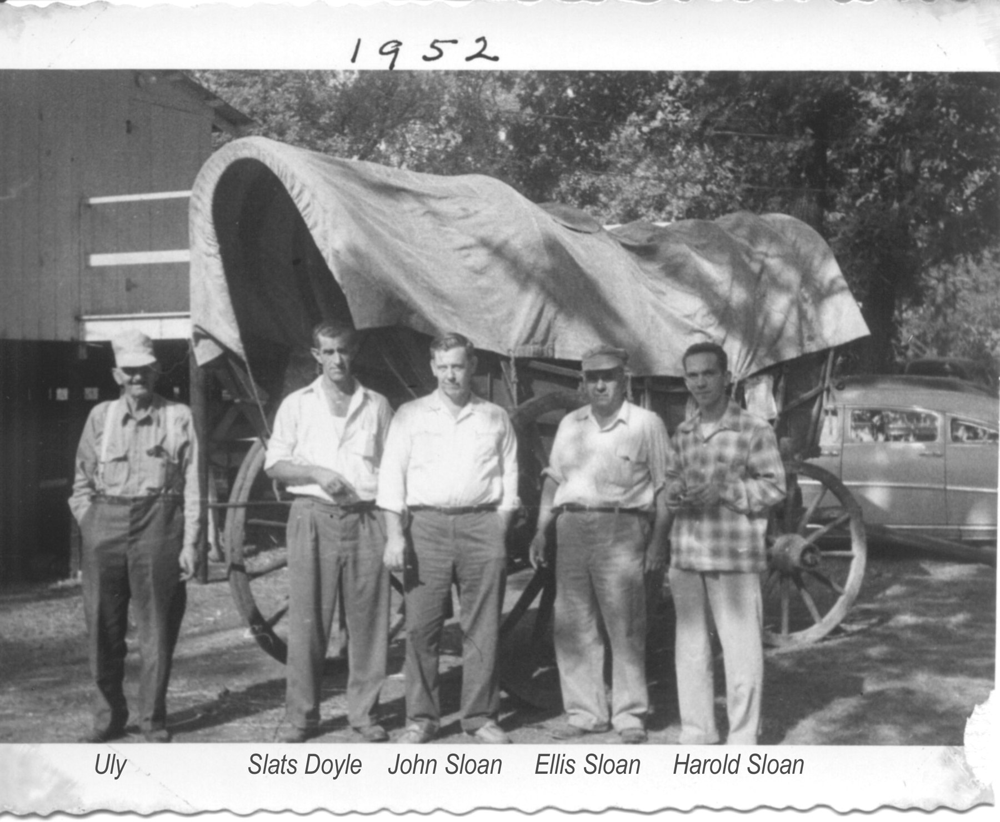
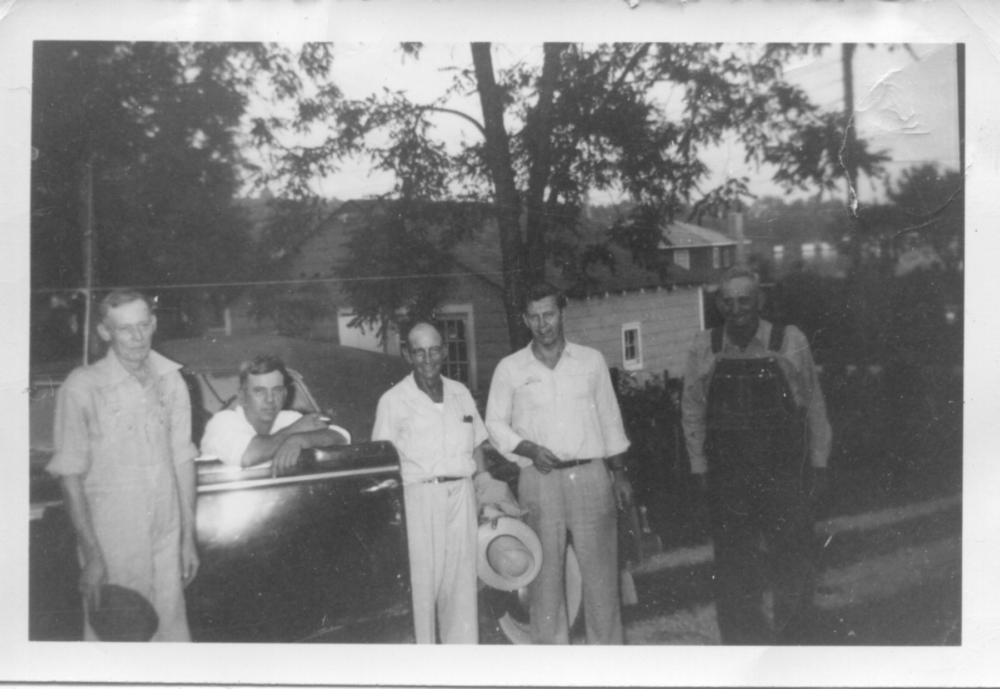
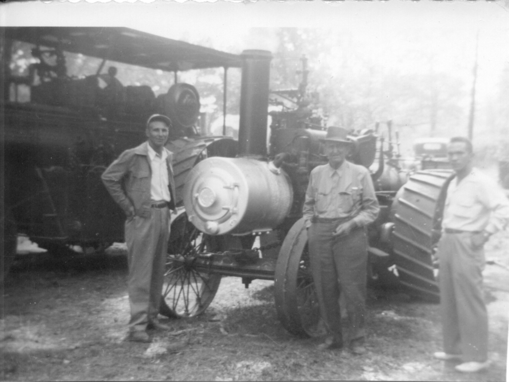
A family legendSanky Bennett
Back in the middle of the woods, farther from the road than the sawmill, stood a little shack. Dad put the story this way in a letter to his cousin in 2000:
There was an old Indian named Sanky Bennet who lived in a cabin behind the woods at the farm. He (legend has it) had at one time been rescued from a lynch mob by Uly Sloan in Mulberry. This man was an expert carver — many local people bought axe handles from him. I have a wooden airplane he supposedly carved after he saw one for the first time. It hung in the old shed at the farm all the time I can remember.
Harold “Kip” Sloan Jr., 2000
Aunt Ruth, who spent her childhood in and out of her grandparents’ place, remembered it a little differently:
The way I remember it, Sanky had been in prison in Oklahoma for murder, although he was from Hamilton corner. His last name was Bennett, I think. I don’t know about the carving, but I know he made all Grandma’s egg baskets as well as my potty chair. He lived in the little shack in the middle of Grandpa’s woods, further back from the road than the sawmill and a bit further west. Long after he died, Harold and I used to go “exploring” in his shack. I think there were some pots and other utensils there, but nothing else. We always thought we would find some secret treasure or something.
Ruth Sloan Hutchins, 2000
Her daughter had heard that when he got out of prison nobody else would give him work or a place to stay, “because he was Indian and because he was an ex-con.” Either way, Uly gave him one.
Ruth also remembered getting lost in the cornfield at five or six, scared to death, until Grandpa Uly came wading through the rows to find her — carrying a shotgun, because they were afraid somebody had carried her off.
1902 – 1972Ellis and Bessie

Ellis Sloan had a rough start. In July 1928, at twenty-six, he broke his right arm in two places cranking a big truck — the bone came through — and spent a month and two operations in Home Hospital at Lafayette. The next year he was in worse trouble. He had borrowed $218.73 from Gustav Adams of Mulberry in 1927 on a chattel mortgage that listed three Jersey cows, fifteen shoats, 250 bushels of oats “in bin on Ulie Sloan’s farm,” a hundred bushels of corn, and “One Black Horse, 5 yrs. old, Wgt. 1600 lbs, Name Jack.” The trouble was that the stock and grain were Uly’s. “The young man said he believed he owned the property, which the father denied,” the Journal and Courier reported. Ellis pleaded guilty to false pretense in Clinton Circuit Court, and on 2 November 1929 Judge Devol gave him six months on the state penal farm and a fifty-dollar fine — the fine, the judge said, for the “many untruths” he told under questioning. The court file is in the research folder.
Whatever passed between father and son, it mended. Ellis came home, worked the mill with Uly for the next forty years, and gave twenty-five of them to the Boy Scouts — Scoutmaster of Troop 380 by 1950, later Scout Commissioner. On 10 December 1932, at Cambria, he married Bessie Bell Gum, the storekeeper’s daughter with the mathematics degree from I.U. (Her family’s story is on the Cambria page.) Harold Ellis was born 21 August 1933 and Ruth Bell in 1935. By the 1950s their home was at Cambria, among her people; in 1952 “Mrs. Ellis Sloan of Cambria” was secretary of the seventeenth annual Sloan–Pickering reunion.
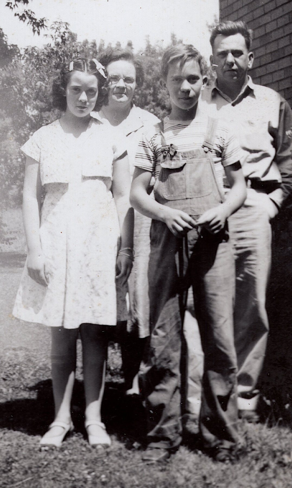
Bessie was raised Methodist, “but let her mother-in-law take my mom to her church to keep peace in the family,” as Ruth’s daughter put it. She was the one in the neighborhood who went running when somebody was sick. When she herself fell painfully ill — she was sick two years — it was eighteen-year-old Ruth who nursed her through it.
Bessie died at home in Cambria on a Monday evening in early September 1954, at forty-nine, a member of Pleasant Hill Presbyterian. (Her obituary points to the 6th; her stone says the 5th.) Her son was a Marine sergeant at Cherry Point, North Carolina; her daughter was “at home.” Three weeks later the paper noted that Miss Ruth Sloan, Rossville class of 1953, had won a state scholarship to the teachers’ college. She married John J. Hutchins and raised her family in Colorado. The Christmas Book marks their visits home: “Ruth & Children, Harold & Family — Dad, Ellis, John, Mary & Jill at Dinner” (1959); “Jack & Ruth & The Four J’s” (1969).
Uly fell on Christmas Eve 1966 and died 26 April 1967, a week short of ninety-one. His great-granddaughter remembered him as “the tallest man I had ever seen,” hard of hearing, walking her out to the grape arbor with her arm stretched as high as it would go to hold his hand. (“Jackie and I each got a Chatty Baby for Christmas and he asked what the doll’s name was. I said ‘Chatty Baby.’ He said ‘Raspberry?!!’ I don’t think he ever got it right.”)
After Uly died, Ellis lived in his father’s house. On Saturday, 22 July 1972, driving west on County Road 550 North, he failed to stop at U.S. 421 and was hit; he died the next day at Clinton County Hospital, a month short of seventy. “Mr. Sloan was a saw mill operator,” the Frankfort Times said. “He was a member of the Pleasant Hill Presbyterian Church and was active in the Boy Scouts for 25 years.” The Christmas Book has one line under the weather and the bean prices: “Ellis L. Sloan killed in traffic — July 23.” Uly and Minnie are buried at Bunnell; Ellis and Bessie at Kilmore.
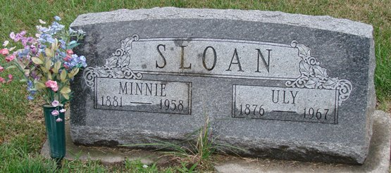
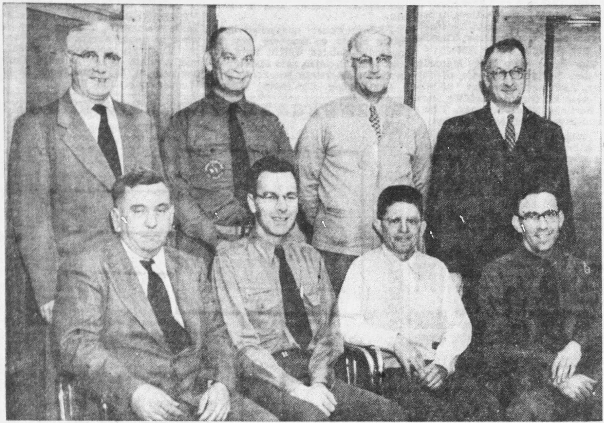
John E. Sloan
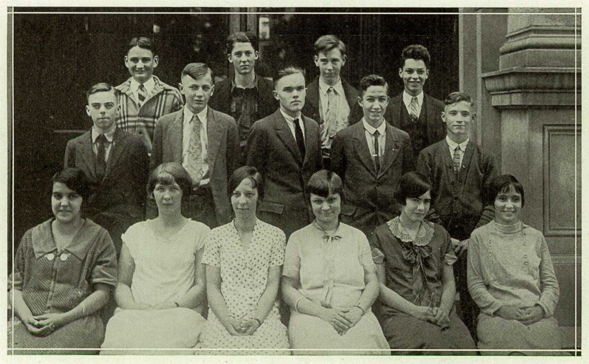
Uly’s younger son John (1910–1997) graduated from Mulberry High School, attended Lafayette Business College, went to work at Duncan Electric in Lafayette, and there met Mary Schwartz. They slipped over to Tower Hill, Illinois, to marry in the Methodist church on 1 September 1934 — with Aunt Zora’s help — and kept it quiet for a year, because Duncan wouldn’t keep a married couple on the payroll; the wedding announcement in the Journal and Courier is dated 31 August 1935 (the bride wore powder blue with navy accessories). They lived fifty years on Lake Freeman at Monticello and were married sixty-two. Their daughter Jill is the cousin who got Ben started.
1933 – 1995Grandpa Harry
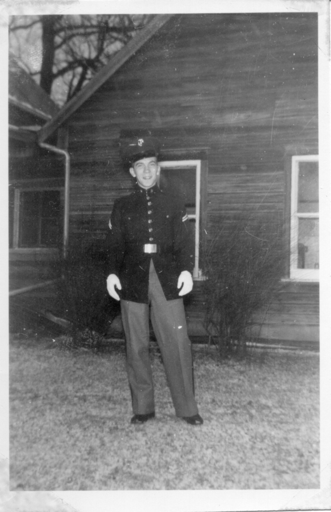
Harold Ellis Sloan grew up between Cambria and the farm, exploring Sanky’s shack with his little sister. At five he had a part in the Christmas play at the Cambria Brethren church. In 4-H he was superintendent of entomology and — one of three Owen Township boys to do it — took an A in baking. He had his mother’s head for mathematics: regional geometry winner in 1949, sent to the state finals at Bloomington; second in the county scholarship contest; salutatorian of the Rossville class of 1951. On 3 December 1951 he was inducted into the service at Indianapolis, and he was home in Marine dress blues for Christmas 1952.
On 29 December 1954 — less than four months after his mother died — Sergeant Sloan married Theresa Ann Riley of Lowell, Massachusetts, seventeen years old, at Morehead City, North Carolina, down the road from the Cherry Point air station. (Her family’s story is here.) He spent twenty-nine years as a tool and die maker at Allison Transmission, farmed, ran “the Sloan Saw Mill west of Mulberry” after his father and grandfather, built model airplanes, hunted and fished, and followed Ellis into Scouting as Scoutmaster of Troop 337 at Rossville (Terry was den mother). In April 1968 the paper had three generations in one paragraph: Scouts, including Kip Sloan, planting a hundred trees near Moran “under the guidance of Scout Commissioner Ellis Sloan. Cub Scout Carl Sloan also helped.” And in 1973 “Harold E. Sloan of Rossville High School” — Dad — was named a National Merit Scholarship semifinalist. Harry and Terry raised five children — Kip, Dianne, Carl, Tim and Laura — and from the mid-1960s on, Christmas dinner was “at Harold’s,” and then “at Cambria.”

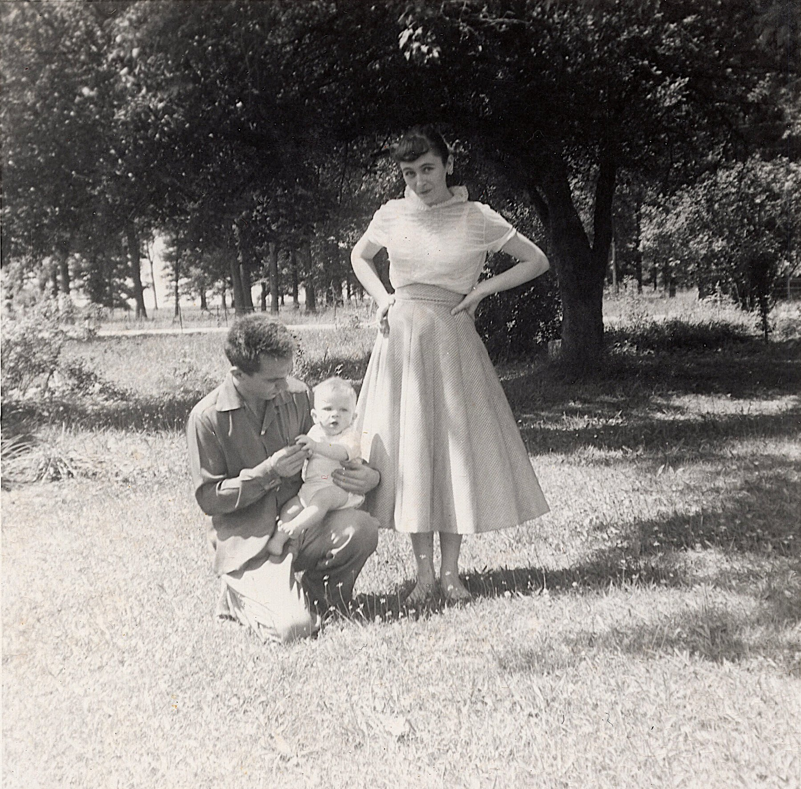
The Christmas Book in his years is full of farm and family: a 24-inch snow in 1974 when “had to walk in to feed horses”; the blizzard of ’78, when “Harry & Boys had to walk in to farm twice with groceries” and not one quail survived; corn at 147, 149, 160 bushels; coon hides at forty dollars and muskrats at seven; four skunks “to make into hats”; Carl off to the Marines and Okinawa; Kip and Deanna married in June 1978 and “now living at farm”; and one new grandchild after another.
The old house Uly built is gone — “I heard that they dug a big hole and shoved the house in it years ago,” Jill wrote. Harold died of cancer at home in Cambria on 9 July 1995, at sixty-one. Terry, who had lived forty-one years in Cambria, clerked at the Super Fresh in Mulberry, and enjoyed bowling, baseball and motorcycles, died on 5 July 2000. Aunt Laura lives on the old homesite now, on the last of the ground John Sloan bought from Andrew Jackson’s land office.